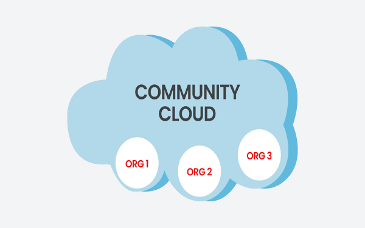

Community Cloud Explained
Community cloud is a cloud infrastructure that allows systems and services to be accessible by a group of several organizations to share the information.
- It is owned, managed, and operated by one or more organizations in the community, a third party, or a combination of them.
- Example: Our government organization within India may share computing infrastructure in the cloud to manage data.
Community Cloud for Healthcare Information Exchange
- Several healthcare organizations, including hospitals, clinics, and medical research institutions, collaborate to provide better patient care, share research findings, and comply with healthcare regulations.
- Centralized Management
- Resource Sharing
- Collaborative Research
Community Cloud Components:
- 1. Infrastructure
- 2. Virtualization & Cloud Platform
- 3. Security & Compliance
- 4. Service Models

Examples:
- 1. Government Cloud (GovCloud)
- 2. Healthcare Community Cloud
- 3. Banking and Financial Cloud
- 4. Educational Cloud
Advantages of Community Cloud:
- 1. Cost Effective
- 2. Flexible and Scalable
- 3. Security
- 4. Sharing Infrastructure
- 5. Improved Business Continuity
Disadvantages of Community Cloud:
- 1. The fixed amount of data storage and bandwidth is shared among all community members.
- 2. Community Cloud is costlier than the public cloud.
- 3. Sharing responsibilities among organizations is difficult.
- 4. Community cloud is not a good choice for every organization.